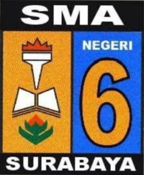

"DATANG BERKARYA PULANG BERHARGA"
SMA Negeri 6 terletak di jantung kota Surabaya, tepatnya di Jalan Gubernur Soeryo No. 11 Surabaya. Bangunan gedung sekolah berasal dari peninggalan jaman Belanda yang sekarang telah ditambah bangunan-bangunan baru dan disesuaikan dengan perkembangan jaman. Pembangunannya dilaksanakan oleh Pemerintah dan Komite SMA Negeri 6 Surabaya yang terus berjalan hingga saat ini. Dahulu bangunan gedung ini digunakan oleh Bangsa Eropa untuk sekolah setingkat dengan TK dan SD yang disebut SSV (Surabaya Scholl Vereneging). Dan setelah kemerdekaan Republik Indonesia digunakan untuk sekolah swasta. SMA Negeri 6 Surabaya didirikan berdasarkan surat keputusan menteri P dan K waktu itu, tanggal 17 September 1957 dengan nama SMA Negeri VI-C Surabaya yang sementara masih menjadi satu komplek dengan SMTA yang terletak di Jalan Wijaya Kusuma Surabaya. Bangsa Indonesia pada tahun 1957 sedang giat-giatnya mengadakan aksi pengembalian Irian Barat ke pangkuan RI. Segala milik Belanda yang ada di bumi Indonesia dinasionalisasi. SSV pun tidak luput dari aksi tersebut. Berdasarkan keputusan KMKB Surabaya, SMA Negeri VI - C Surabaya dapat menempati gedung SSV tersebut sampai dengan sekarang. Perkembangan SMA Negeri 6 Surabaya semakin pesat, terus mengikuti perkembangan dan keadaan jaman demikian juga dengan kurikulumnya. Sekitar tahun 1963 berlaku kurikulum gaya baru sehingga sebutan SMA Negeri VI - C Surabaya menjadi SMA Negeri VI Surabaya. Kurikulum 1975 yang merupakan inovasi menuju kearah kemajuan dalam dunia pendidikan maka sebutan SMA Negeri VI Surabaya (angka romawi) menjadi SMA Negeri 6 Surabaya (angka biasa). Mulai tahun 2004 yang lalu, di sebagian besar SMA berlaku kurikulum tahun 2004 yang dilaksanakan sampai sekarang ini. Mulai tahun pelajaran 2007 - 2008 SMA Negeri 6 Surabaya melaksanakan kurikulum 2006 yang dikenal dengan KTSP (Kurikulum Tingkat Satuan Pendidikan). Dengan dilaksanakannya kurikulum ini diharapkan SMA Negeri 6 Surabaya dapat membawa siswanya menjadi lulusan yang terbaik.
Terwujudnya SMA Negeri 6 Surabaya sebagai sekolah unggul, yang menghasilkan lulusan berkualitas : cerdas, kreatif, santun dan agamis, serta berwawasan global.